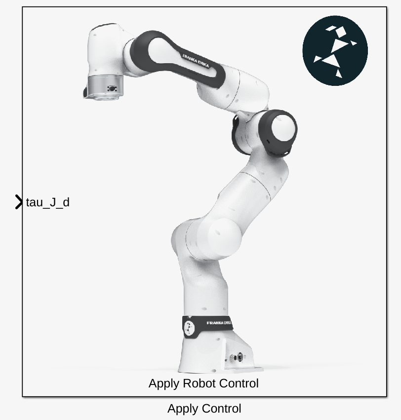
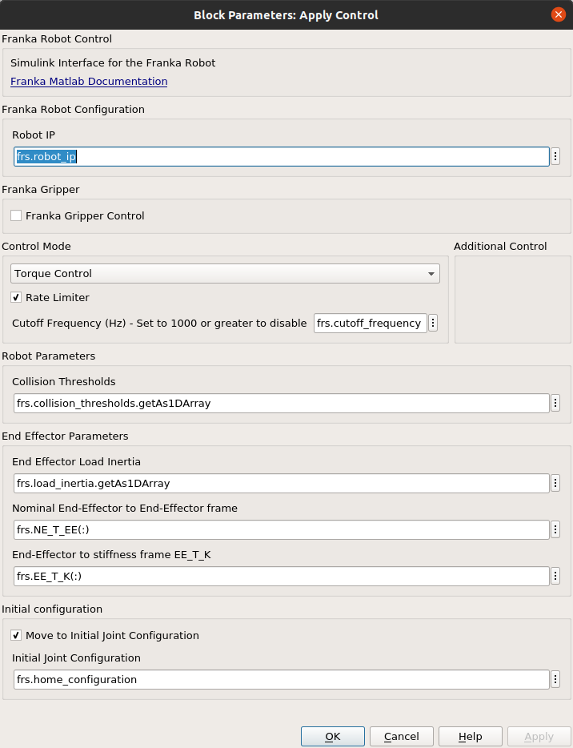
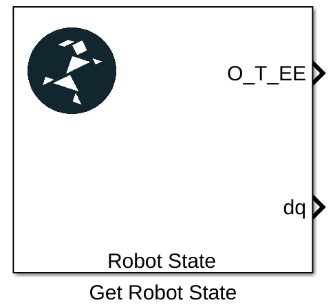
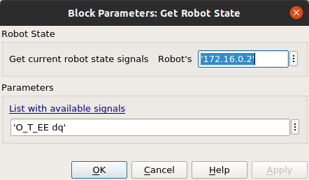
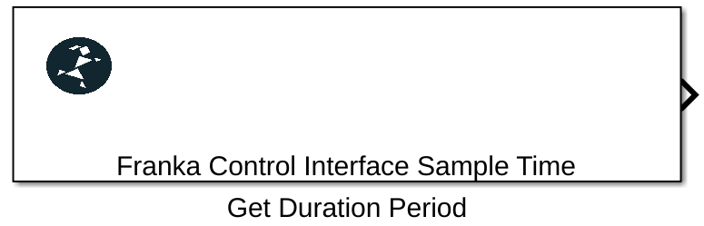
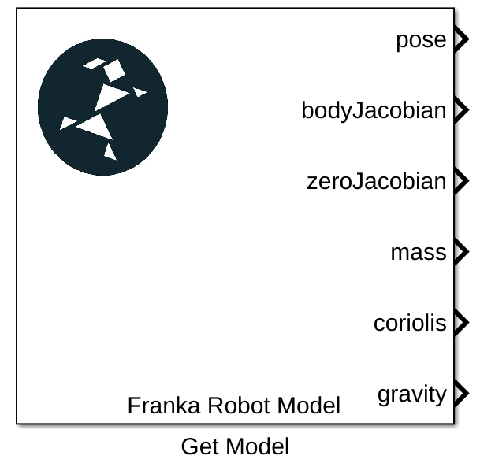
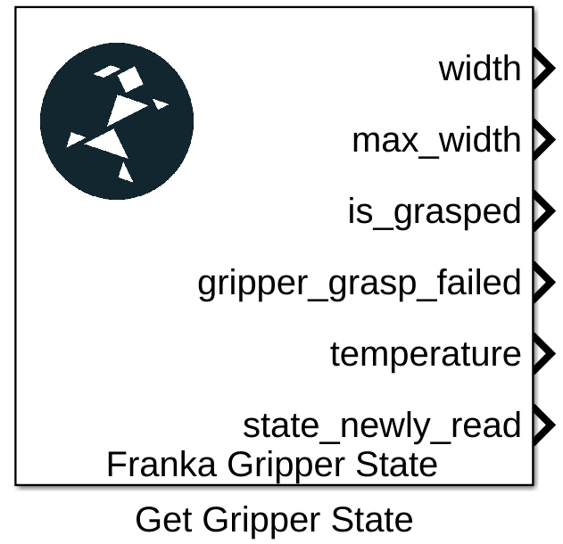

Simulink Library
Hint
Regarding the inputs/outputs signals nomenclature datatypes and sizes the libfranka definitions have been fully adopted. You can check the list of signals here –> Robot State Attributes. Column-major format for the signal has been adopted as well.
Apply Control

Apply Control Simulink Block.
This is the main block of the franka simulink library and it is responsible for applying the desired parameters and control signals to the robot.
Additionally a set of parameters for the robot can be applied through this block main pane based mostly on the desired control mode that is selected from the drop-down list Control Mode.
{kind=link}

Apply Control Simulink Block Settings.
Hint
If desirable, an initial robot configuration can be applied !!before!! the main execution of the control loop. Namely the robot will move to the desirable configuration and only then the main execution of the Simulink model will take place. You can define that in the Initial Configuration section of the block settings.
Get Robot State

Get Robot State Simulink Block.
You can write the signals that you wish to capture in free text form in the Parameters section. For the set of available signals –> Robot State Attributes

Get initial robot state Simulink Block Settings.
Get Duration(Sample Time)

Get duration from last main callback(Sample Time) Simulink Block.
This Simulink block outputs the duration from the last execution step in seconds. Ideally this should be always 0.001 seconds but due to lost packages during communication errors 0.002 secs or 0.003 secs could be seen.
Warning
The step count of the Simulink model does not change during these communication mishaps! It just continues incrementally although an execution step in reality has been lost! Special design considerations should be therefore demanded especially in the case of sensitive position motion generators. Have a look to e.g the generate_cartesian_pose_motion.slx demo to see how the main “clock” of the application has been designed.
Get Model

Get robot model numeric values Simulink Block.
This Simulink block will deliver the numerical values of the Model of the Franka robot. For an analytical description of the available signals see –> Robot Model Signals
Get Gripper State

Get current gripper state Simulink Block.
The get gripper state block will inform the application about the current gripper state.
Hint
Highly recommended to have a look at the GripperState Struct Reference for the list of available signals and the demo grasp_objects.slx which is provided for getting started.